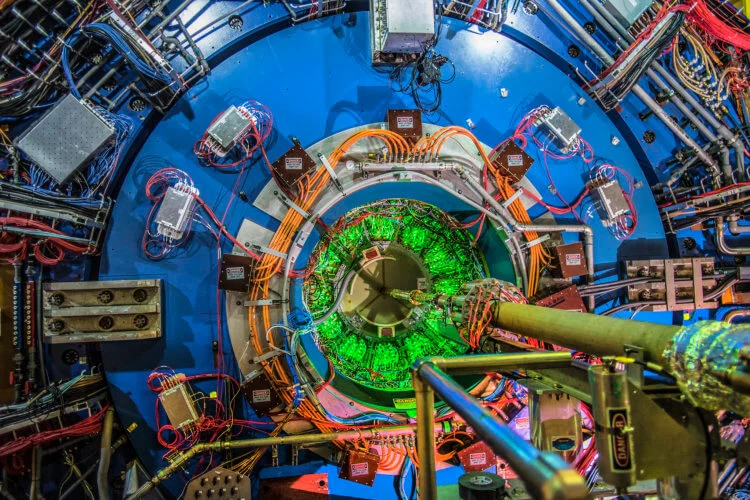
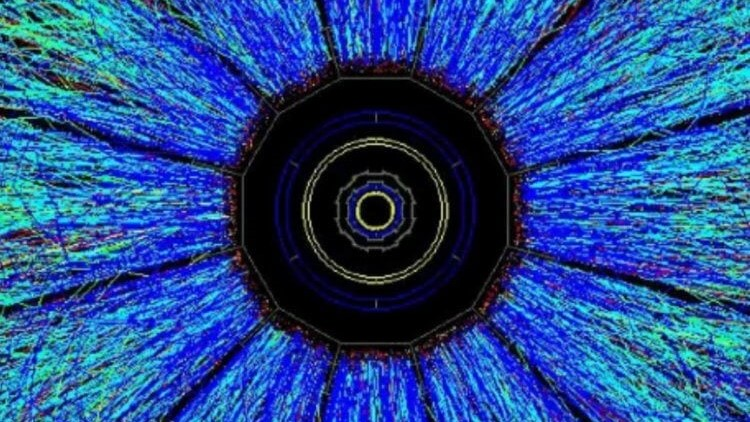
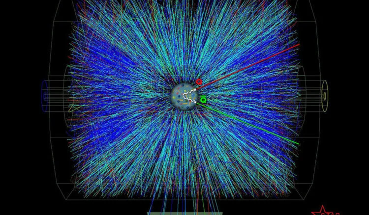

-ИЗОБРАЖЕНИЕ ЯДРА ВНУТРИ АТОМА-
Напомним, что квантовой запутанностью называется связь двух (и более) частиц, свойства которых остаются одинаковыми вне зависимости от того, как далеко эти частицы находятся друг от друга. Альберт Эйнштейн, кстати, называл запутанность «сверхъестественной».

Релятивистский коллайдер тяжелых ионов (RHIC) – ускоритель частиц, предназначенный для изучения столкновений между тяжелыми ионами (золота, медь, уран и др.) на релятивистских скоростях. Как объясняют авторы изображения, принцип работы коллайдера напоминает метод позитронно-эмиссионной томографии (ПЭТ), которая позволяет увидеть что происходит внутри мозга и других органов.
Благодаря новому методу, физики смогли получить представление о внутреннем строении атомов, а также стать свидетелями нового типа квантовой запутанности. Исследование этого эффекта считается одним из самых перспективных в современной физике – в ходе эксперимента ученые наблюдали за фотонами и ионами золота в момент их ускорения вокруг коллайдера RHIC и в результате заглянули внутрь атомных ядер.

Тем не менее увидеть атом и его ядро собственными глазами невозможно. Новое изображение, опубликованное в начале 2023 года, сделано с большой выдержкой, но даже мощнейшие научные инструменты с трудом способны уловить элементарные частицы, так как они невероятно малы.
Но вот что особенно важно – и новое изображение структуры атомных ядер и предыдущие изображения, полученные в 2009 и 2021 годах, соответствуют теоретическим предсказаниям и фундаментальным принципам квантовой механики. К тому же это первое в истории экспериментальное наблюдение квантовой запутанности (и ее новой формы) между разнородными частицами.
Тем не менее субатомный мир остается загадкой для ученых, которые пытаются выяснить как формируется наша реальность. Задача непростая, согласитесь.

К счастью, будущие эксперименты на RHIC (а также других коллайдерах и еще более мощных инструментах), позволят физикам не только детально изучить распределение глюонов внутри атомных ядер, но лучше понять сложно и таинственное устройство Вселенной.